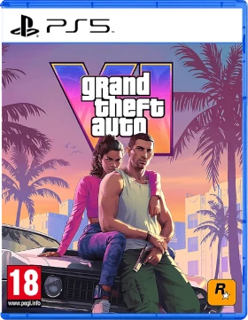
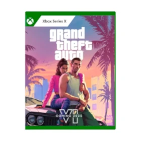
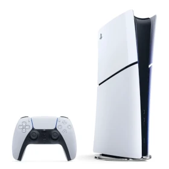
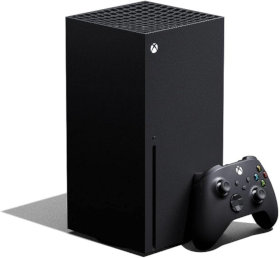
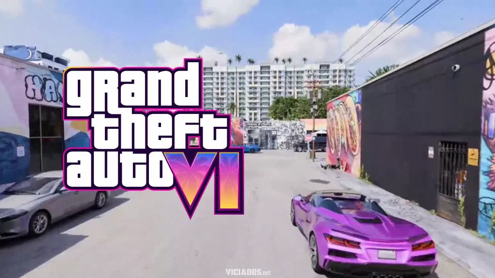
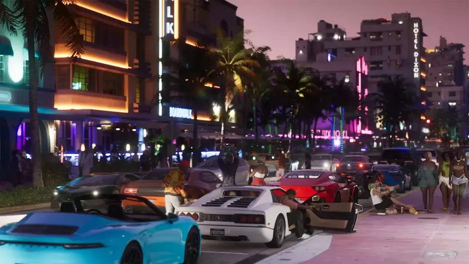

O novo capítulo da franquia retorna para a cidade inspirada em Vice City, agora localizada no estado fictício de Leonida. O jogo terá dois protagonistas principais: Jason e Lucia, formando uma dupla criminosa que lembra histórias estilo Bonnie & Clyde
O GTA 6 continuará sendo um jogo de mundo aberto, mas promete ser muito maior e mais detalhado do que os anteriores. A expectativa é de:
→ Mundo aberto enorme em Leonida
→ Dois personagens jogáveis
→ NPCs com inteligência artificial mais avançada
→ Mais interações sociais e eventos aleatórios
→ Sistema policial melhorado
→ Mais interiores exploráveis
→ Redes sociais e conteúdo viral dentro do jogo, inspirado na internet atual
No lançamento, o jogo está confirmado apenas para:
→ PlayStation 5
→ Xbox Series X
→ Xbox Series S
🚨 Até agora, não existe confirmação oficial de versão para PC no lançamento. Também não foi anunciado para PS4 ou Xbox One.




A data ofical é:
19 de novembro de 2026. A rockstar alterou a previsão anterior para essa nova data.
A Rockstar ainda não revelou o preço oficial. Porém, especialistas e mercado acreditam em algo próximo de:
→ Edição padrão: US$ 70-100
→ No Brasil: provalvelmente entre R$ 350 e R$ 600+, dependendo daa edição e impostos
Como não existe versão de PC anunciada oficialmente, os requisitos abaixo são apenas previsões:
→16 GB RAM
→ SSD obrigatório
→GTX 1660 / RX 5600 XT
→ Ryzen 5 3600X ou similar
→ Cerca de 150–200 GB livres
32 GB RAM
SSD NVMe
RTX 3060 ou superior
Ryzen 7 5800X ou superior
Mais de 200 GB livre
Tudo indica que será o maior lançamento da história da Rockstar, com um mapa enorme, tecnologia avançada e foco em nova geração. O principal problema até agora é que jogadores de PC talvez precisem esperar mais tempo.
A sede principal da Rockstar Games fica em
New York City mais especificamente no bairro SoHo no endereço 622 Broadway New York NY 10012 EUA É lá que ficam áreas corporativas marketing e administração da empresa
